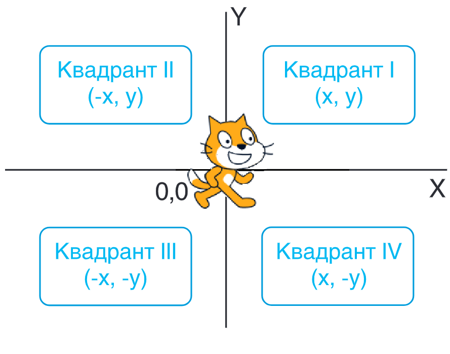
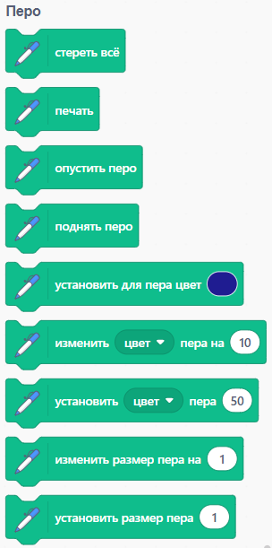
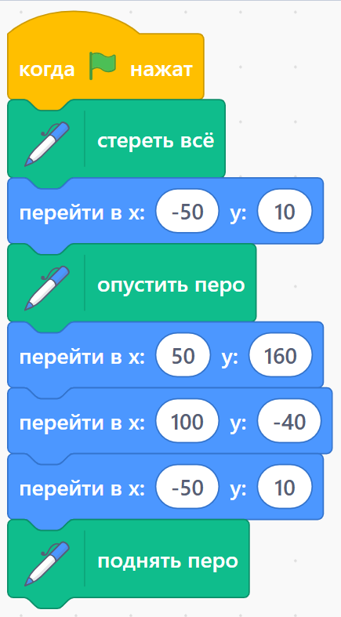
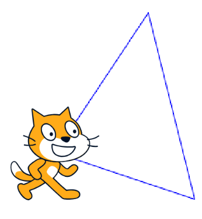

Компьютерный исполнитель Перо

Перо — это дополнительный перечень блоков, представленных в языке программирования Scratch, который позволяет создавать рисунки, если ему указать правильные команды.
Среда обитания исполнителя Scratch — координатная плоскость. Исходное положение спрайта — точка с координатами (0,0), перо опущено. Значения координаты х изменяются от –275 до 275, а координаты y — от –215 до 215. Размер окна Scratch при этих значениях х 550 × 430.
Некоторые команды-блоки исполнителя Перо, с помощью которых можно написать программы, представлены ниже:

Для выполнения команд с помощью Пера, необходимо перетаскивать необходимые блоки на главную рабочую поверхность в нужном порядке, соединяя их между собой. В качестве примера рассмотрим задание: "Изобразите треугольник, вершины которого лежат в точках с координатами: (-50;10), (50;160), (100;-40)."
| Код: | Программа: |
|
 |
 |
Упражнения

Проанализируете задание, код-решение и изображение-решение. Найдите
отличие между изображением, кодом и условием и ответьте на вопросы
«да» или «нет»:
1. Соответствует ли код программы условию задания?
2. Соответствует ли рисунок условию задания?
3. Соответствует ли рисунок коду программы?

Проанализируете задание и изображение-решение. Найдите отличие между изображением и условием. Соответствует ли рисунок условию задания? («да» или «нет»).

Составьте условие к программе с представленным кодом решением для и изображением фигуры.

Будет позже
Будет позже
Составьте программу для построения изображения, соответствующего условию:
«Изобразите фигуру на холсте размером по координатам (-60, 60) (60, 60) (60, -100) (-60, -100) (-60,
60)»

Составьте программу для построения изображения треугольника, соответствующего условию:
«Изобразите треугольник по координатам (-60, -40) (0, 50) (120, -40) (-60, -40)»
Будет позже
Будет позже
Составьте программу для построения изображения